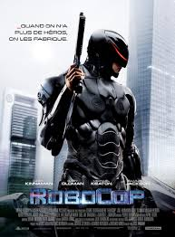

Spider-Man – Ein Teenager mutiert zum Superhelden
Man mag es kaum glauben, aber der erste offizielle Spider-Man Film kam wirklich erst 2002 in die Kinos. Zwar liefen in Deutschland in den 80er-Jahren drei Spider-Man Filme, doch dabei handelt es sich nur um sechs zum Spielfilm zusammengestellte Doppelfolgen einer US-Serie. Mit dem Spider-Man Film von Sam Raimi feierte der Superheld dann auch seinen größten Popularitätszuwachs, auch wenn sich Raimi im Vergleich zur Comicvorlage einige Freiheiten erlaubte. Die Hauptrolle konnte sich Tobey Maguire angeln, der für seine Verkörperung des Spider-Man sechs Monate trainierte, um seinen Körper auf Vordermann zu bringen und für den der Spider-Man Film den endgültigen Durchbruch in Hollywood bedeutete.
RoboCop

Eine Firma mit dem Namen OCP (Omni Consumer Products) will aus Detroit “Delta City” machen. Dazu muß aber zuerst einmal das Verbrechen aus der Stadt entfernt werden, das hier momentan viel Macht besitzt. Dick Jones, die rechte Hand des Chefs von OCP, hat daher einen Roboter entwickelt, der die Polizei der Stadt entlasten und sogar ersetzen soll. Doch schon im ersten Test erweist sich der Cyborg als untauglich, aber Dicks Mitarbeiter Bob Morton hat eine andere Idee: Statt eines reinen Roboters will er einen RoboCop bauen, der ein menschliches Bewußtsein hat. Hierzu brauchen sie einen toten Polizisten, den sie auch schnell haben, als Alex Murphy an seinem ersten Tag im Dienst ermordet wird. Die Synthese aus Mensch und Roboter gelingt, nur hat die Sache einen Haken: RoboCop verbringt mehr Zeit damit, seine Mörder – also die von Alex – zu finden, als die Verbrecher der Stadt zu bekämpfen.